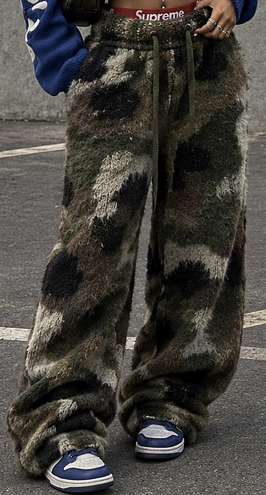
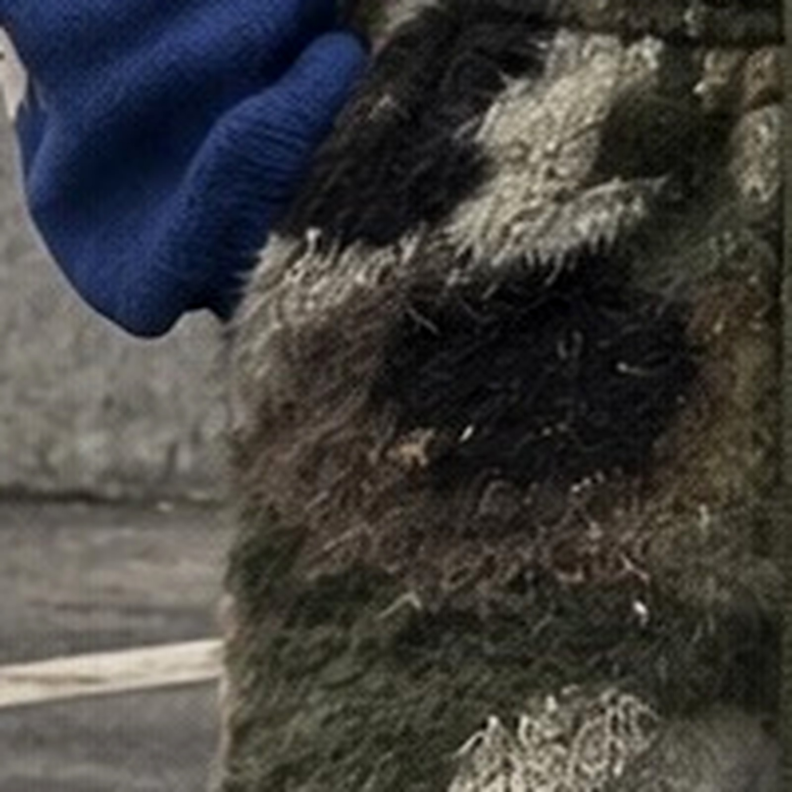
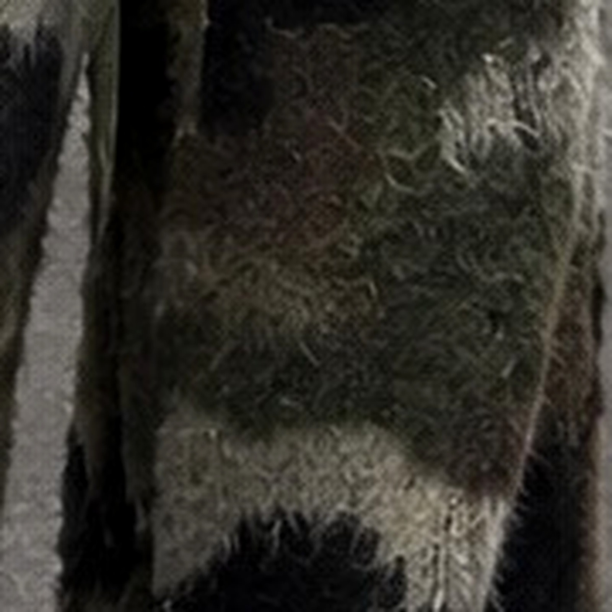
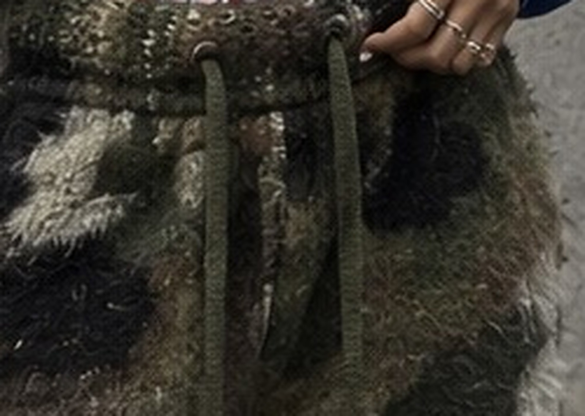
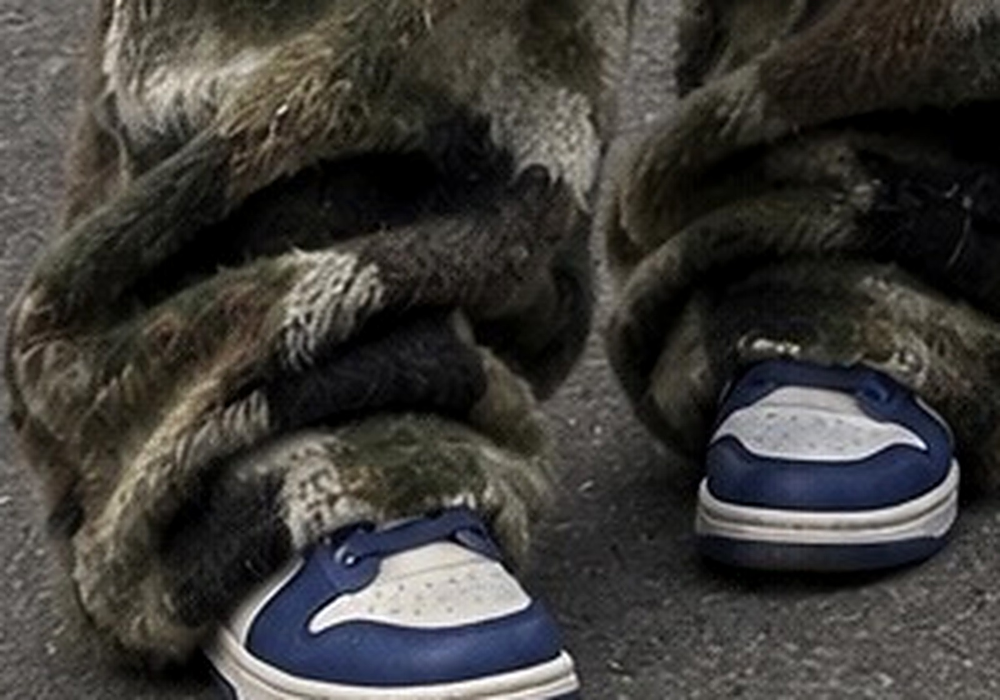

| Produit / Item | Pantalon jogging large en maille brossée effet mohair, motif camouflage jacquard Wide-leg drawstring pant, brushed mohair-effect jacquard knit, camo pattern |
|---|---|
| Coupe / Fit | Oversize, jambe large droite, taille basse / Relaxed wide straight leg, low-mid rise |
| Taille / Waist | Ceinture maille 5 cm, élastique 4 cm + cordon de serrage, 2 œillets métal / 5 cm knit waistband, 4 cm elastic + drawcord, 2 metal eyelets |
| Bas / Hem | Ourlet simple 3 cm, sans bord-côte, longueur « puddle » / 3 cm plain hem, no cuff, puddle length |
| Poches / Pockets | 2 poches côté en biais dans la couture (à confirmer) / 2 in-seam side pockets (TBC) |
| Doublure / Lining | Doublure jersey léger noir, jambes complètes — recommandé (maille brossée = transparente + qui gratte) / Full black light jersey lining recommended |
Valeurs indicatives tirées de la photo — valider sur lab dip / Indicative, approve on lab dip.




| Construction | Maille jacquard (camo) puis brossée / Jacquard knit, brushed finish. Jauge proposée 5–7 GG |
|---|---|
| Composition (proposition) | Option A : 40% acrylique, 30% polyamide, 20% laine, 10% mohair · Option B (budget) : 70% acrylique, 30% polyester — à proposer par le fournisseur |
| Poids / Weight | 550–650 g/m² (cible / target) |
| Toucher / Hand-feel | Doux, poil long, ne doit pas gratter ; faible perte de poils (test pilling + shedding) |
| Demandé / Requested | Échantillon matière 30×30 cm + lab dip des 5 couleurs avant prototype / 30×30 cm swatch + lab dips before proto |
| Point de mesure / POM | XS | S | M | L | XL | Tol. ± |
|---|---|---|---|---|---|---|
| 1. ½ tour de taille relâché / ½ waist relaxed | 32 | 34 | 36 | 38 | 40 | 1 |
| 2. ½ tour de taille étiré / ½ waist stretched | 46 | 48 | 50 | 52 | 54 | 1 |
| 3. ½ tour de hanches (20 cm sous taille) / ½ hip | 52 | 54 | 56 | 58 | 60 | 1 |
| 4. Montant devant (ceinture incl.) / Front rise | 31 | 32 | 33 | 34 | 35 | 0.5 |
| 5. Montant dos / Back rise | 38 | 39 | 40 | 41 | 42 | 0.5 |
| 6. ½ cuisse (2 cm sous entrejambe) / ½ thigh | 33 | 34 | 35 | 36 | 37 | 1 |
| 7. ½ genou / ½ knee | 29 | 30 | 31 | 32 | 33 | 1 |
| 8. ½ bas de jambe / ½ leg opening | 28 | 29 | 30 | 31 | 32 | 1 |
| 9. Entrejambe / Inseam | 80 | 81 | 82 | 83 | 84 | 1 |
| 10. Longueur côté (ceinture incl.) / Outseam | 111 | 113 | 115 | 117 | 119 | 1 |
| 11. Hauteur ceinture / Waistband height | 5 | 0.3 | ||||
Mesures à plat. Valeurs proposées à partir de la photo — à valider sur le premier prototype taille M. / Flat measurements, proposed — confirm on M proto.
| Élément / Item | Spécification | Qté |
|---|---|---|
| Tissu principal / Main fabric | Maille jacquard camo brossée (voir p.2) | ~1.6 m |
| Doublure / Lining | Jersey polyester/viscose 140–160 g/m², noir | ~1.4 m |
| Élastique taille / Waist elastic | Tissé 4 cm, plat | 1 |
| Cordon / Drawcord | Tricoté plat ~1 cm, olive #4A4F33, longueur 140 cm, embouts noués ou métal mat | 1 |
| Œillets / Eyelets | Métal Ø 10 mm, finition bronze vieilli / gunmetal, renfort entoilage dessous | 2 |
| Étiquette marque / Main label | Tissée « WAVEY® » noir/blanc, 5×2 cm, milieu dos ceinture intérieur | 1 |
| Étiquette entretien + taille / Care + size | Satin imprimé, couture côté gauche | 1 |